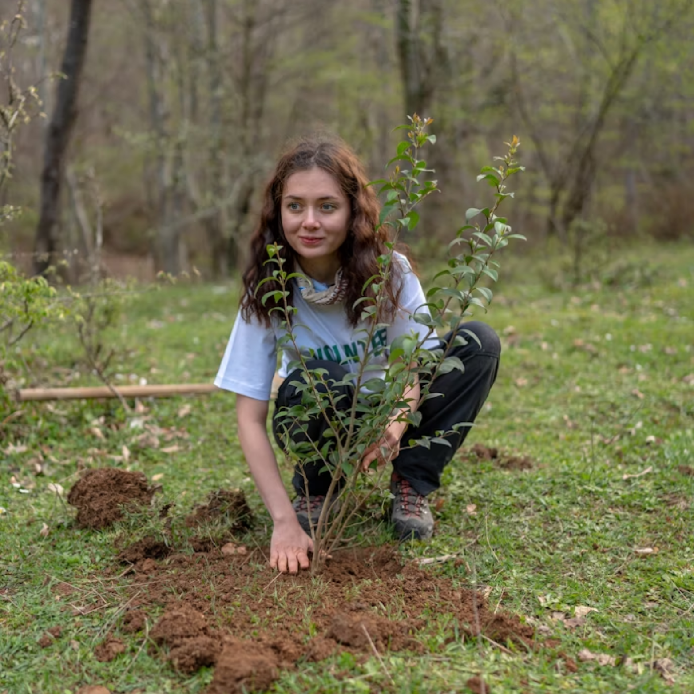
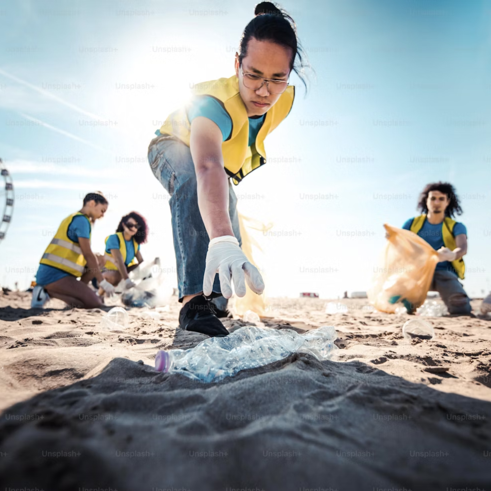

Earth Sustainability

Restore nature where people live

Restore nature where people live
At Earth Sustainability, we believe that small actions can create a ripple effect that transforms communities and safeguards the planet for generations to come. Our orgainization was founded on the vision of empowering individuals and communities to take meaningful steps in the fight against climate change. What started as a simple idea to, rasie awareness about eco-friendly practices, has grown into a movement dedicated to education, reforestation, recycling initiatives, and prompting sustainable living across all levels of society.
Our mission is not only to raise awareness but to drive tangible change. Over the years, we have implemented projects that restore ecosystems, reduce waste, and support green innovations. From planting thousands of trees to running local clean-up campaigns and supporting schools with sustainability education, every project brings us closer to a healthier planet. These efforts are backed by measurable results from the tons of plastic recycled to the hectres of land rehabilitated - which reflect our ongoing impact.
 |
 |
Behind Earth Sustainability is a passionate team of changemakers who share a deep commitment to protecting our environment. Each member brings unique expertise, whether in environemental science, education, community engagement, or project management, but we are united by a common goal: To create a world where people and nature thrive together. By sharing our team's stories, we wanted our supporters to see the heart and dedication that drive our work everyday.
Ultimately, Earth Sustainability is more than just an orgainisation, it is a growing community of individuals, volunteers, and partners who believe in building a sustainable future. We invite everyone to join us in this journey whether through volunteering donating or simply adopting green choices in their daily lives. Together, we can transform our vision of a cleaner, greener Earth into reality.
|  |  |